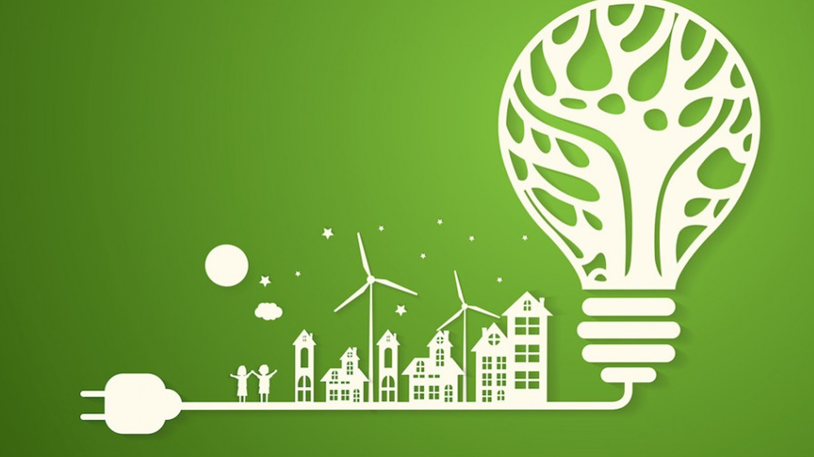
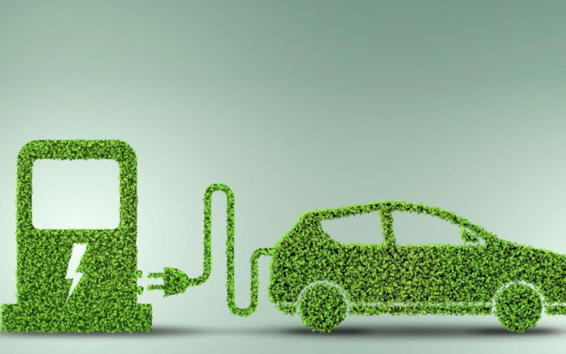
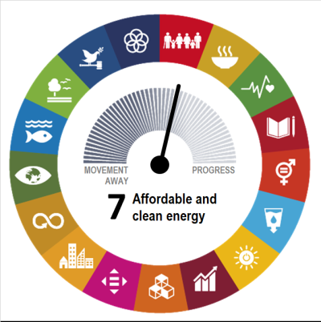
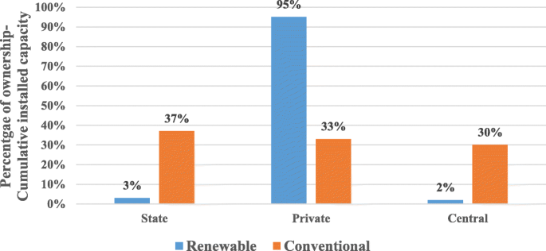
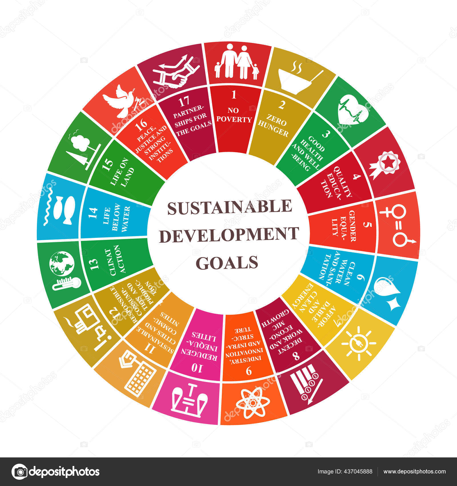
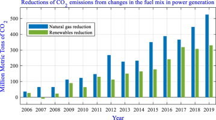

Challenges
Electricity consumption is a critical aspect of modern life, powering homes, industries, and technologies. However, this essential resource comes with its set of challenges on the path towards sustainability. Understanding and addressing these challenges is crucial for building a cleaner and greener future.
The Dependence on Non-Renewable Energy Sources
One of the primary challenges in achieving sustainable electricity usage is the world's heavy reliance on non-renewable energy sources, such as coal, oil, and natural gas. These sources contribute significantly to greenhouse gas emissions, leading to climate change and environmental degradation.
To overcome this challenge, there's a pressing need to transition towards cleaner and renewable alternatives like solar, wind, hydro, and geothermal energy. This shift requires substantial investments in infrastructure, technology, and policy frameworks to support the widespread adoption of renewable energy.
Carbon Emissions from Traditional Power Plants
Traditional power plants, especially those relying on fossil fuels, emit large amounts of carbon dioxide and other pollutants into the atmosphere. These emissions contribute to air pollution, respiratory problems, and climate change. Finding sustainable alternatives to these power generation methods is paramount for reducing the environmental impact of electricity production.
The development and implementation of cleaner technologies, carbon capture and storage, and increased energy efficiency measures are essential steps in mitigating the adverse effects of carbon emissions from power plants.
Inadequate Infrastructure for Renewable Energy
While renewable energy sources hold immense potential, the current infrastructure is often insufficient to harness and distribute their full capacity. Challenges include the intermittent nature of some renewables (like solar and wind) and the need for robust energy storage solutions to address fluctuations in energy production.
Investments in smart grids, energy storage technologies, and grid modernization are critical for overcoming these infrastructure challenges. Additionally, policies that incentivize the integration of renewable energy into existing grids can accelerate the transition towards a more sustainable electricity system.
Solutions
Addressing the challenges of sustainable electricity usage requires a holistic approach, combining technological innovation, policy changes, and community involvement. Here are key solutions to foster a greener and more sustainable energy future:
Investing in Renewable Energy Sources
The cornerstone of sustainable electricity lies in shifting from fossil fuels to renewable energy sources. Governments, businesses, and individuals should invest in solar, wind, hydro, geothermal, and other clean energy alternatives. These sources not only reduce carbon emissions but also promote energy independence and resilience.
Incentives and subsidies for renewable energy projects, along with advancements in technology, can make these sources more accessible and cost-effective.
Promoting Energy Efficiency and Conservation
Energy efficiency is a powerful tool in the quest for sustainability. Encouraging the use of energy-efficient appliances, buildings, and transportation can significantly reduce overall energy consumption. Additionally, raising awareness about energy conservation practices empowers individuals and communities to make informed choices.
Governments and businesses play a crucial role by implementing and enforcing energy efficiency standards and promoting sustainable practices.
Implementing Smart Grids and Technologies
Smart grids leverage digital technology to optimize the generation, distribution, and consumption of electricity. By integrating sensors, communication networks, and advanced analytics, smart grids enhance the reliability and efficiency of the electrical grid.
Investments in smart grid infrastructure enable better management of energy resources, reduce grid losses, and accommodate the integration of renewable energy sources.
Blog

Exploring the Impact of Solar Power on Electricity Sustainability
Date: November 14, 2023
Solar power stands out as a beacon of hope in the quest for sustainable electricity, offering a multitude of environmental benefits. One of its most significant contributions lies in the realm of carbon footprint reduction. Traditional energy sources, such as coal and natural gas, release large quantities of greenhouse gases into the atmosphere, exacerbating climate change. Solar power, on the other hand, harnesses energy from the sun without emitting harmful pollutants during operation. Studies indicate that the adoption of solar energy significantly decreases carbon dioxide emissions, making it a crucial player in mitigating the impacts of climate change
Read more

The Wind of Change: Harnessing the Power of Wind Energy
Date: November 21, 2023
Wind power is emerging as a prominent player in the journey towards sustainable energy. Harnessing the kinetic energy of the wind, wind turbines generate electricity without producing greenhouse gas emissions. This article explores the advancements in wind energy technology, its environmental benefits, and the challenges in widespread adoption.
Read more

The Role of Energy Conservation in Sustainable Living
Date: November 28, 2023
Energy conservation is a fundamental aspect of sustainable living. This article delves into practical tips for individuals and businesses to reduce energy consumption, from adopting energy-efficient practices at home to implementing eco-friendly measures in the workplace. Discover how small changes can contribute to a more sustainable and energy-conscious lifestyle.
Read more
Building Tomorrow: The Role of Sustainable Cities in Energy Transition
Date: December 5, 2023
Sustainable urban development is pivotal in the global transition to cleaner energy systems. This article explores the concept of sustainable cities, discussing innovative approaches to urban planning, renewable energy integration, and smart infrastructure. Discover how cities worldwide are taking steps towards a greener, more sustainable future.
Read more

Driving Change: The Impact of Electric Vehicles on Sustainable Transportation
Date: December 12, 2023
Electric vehicles (EVs) are revolutionizing the transportation sector with their potential to reduce carbon emissions. This article explores the advancements in electric vehicle technology, the environmental benefits of EV adoption, and the challenges and opportunities in transitioning to electric mobility on a global scale.
Read more
DATA ANALYSIS


SDG7:Affordable and Cleanable

